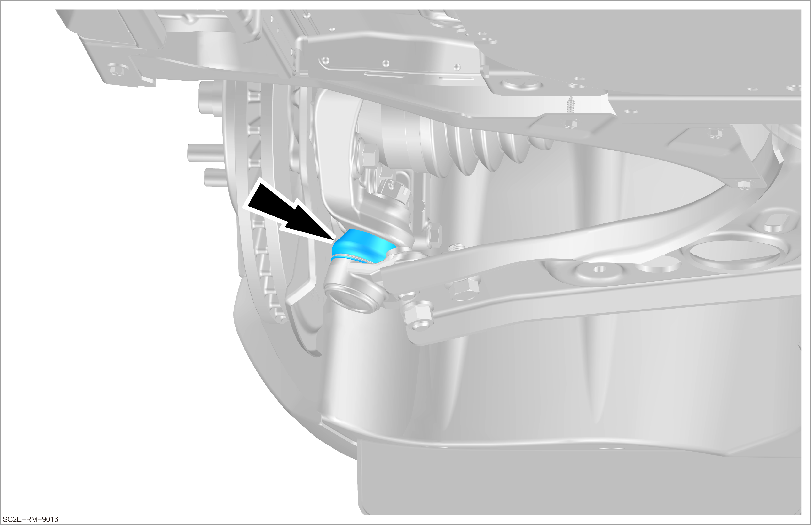
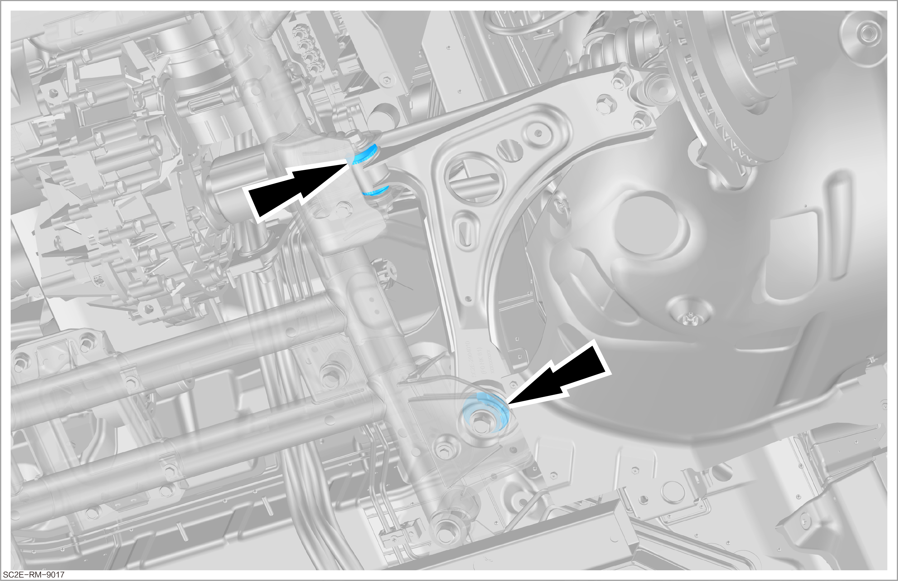
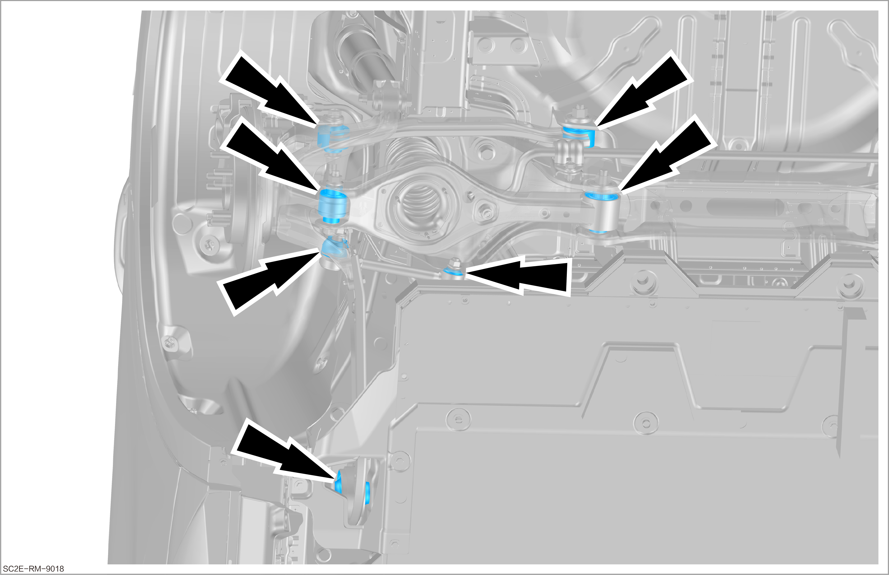

Visual Inspection of Lower Control Arm Ball Stud Dust Cover and Rubber Support

The inspection methods of the left and right sides are the same. Take the left side as an example.
Front suspension
-
Check that the dust cover of the lower control arm ball stud is free of damage or aging.
Reminder-
Prolonged entry of dirt or moisture due to a damaged dust cover may result in ball stud damage, and the ball stud must be replaced.
 -
-
Check that the rubber of the lower control arm rubber support is free of cracks, aging or disconnection.
 -
Obtain a new work order for repair or replacement.
Rear suspension
-
Check that the rubber of all rubber supports on the rear suspension is free of aging or cracking.
 -
Check that the rubber of all rubber supports on the rear subframe is free of aging or cracking.
-
Check whether the rubber support is damaged as follows:
-
The connection between the rubber molded parts and metal is completely cracked.
-
There is a large clearance between the rubber support and subframe components, which has an obvious negative impact on the function of the rubber support.
ReminderSurface cracks have no substantial impact on the function of elastic motion rubber support, so they are not covered in the scope of fault.
-
-
Obtain a new work order for repair or replacement.